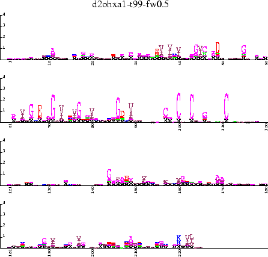

The SAM-T99 method is an iterative HMM method. It is a refinement of the methods used at UCSC for the 1996 CASP2 protein structure prediction contest:
K. Karplus, K. Sjölander, C. Barrett, M. Cline, D. Haussler, R. Hughey, L. Holm, and C. Sander, ``Predicting Protein Structure Using Hidden Markov Models,'' in Proteins: Structure, Function, and Genetics, Supplement 1:134-139, 1997.
as well as the 2000 CASP4 and 1998 CASP3 contests:
K. Karplus, R. Karchin, C. Barrett, S. Tu, M. Cline, M. Diekhans, L. Grate, J. Casper, and R. Hughey, ``What is the value added by human intervention in protein structure prediction?,'' invited for Proteins: Structure, Function, and Genetics, 2001.
K. Karplus, C. Barrett, M. Cline, M. Diekhans, L. Grate, R. Hughey, ``Predicting Protein Structure using Only Sequence Information'' Proteins: Structure, Function, and Genetics, Supplement 3:121-125, 1999.
The CASP3 SAM-T98 method is described in detail in the following article, which should be cited along with the SAM paper whenever the SAM-T99 is used:
K. Karplus, C. Barrett, and R. Hughey, ``Hidden Markov Models for Detecting Remote Protein Homologies,'' Bioinformatics, 14(10):846-856, 1998.
SAM-T98 is shown to be better for remote homology detection than BLAST, FASTA, ISS, and PSI-BLAST in
J. Park, K. Karplus, C. Barrett, R. Hughey, D. Haussler, T. Hubbard, and C. Chothia, ``Sequence Comparisons Using Multiple Sequences Detect Twice as many Remote Homologues as Pairwise Methods,'' Journal of Molecular Biology, 284(4):1201-1210, 1998.
The performance of SAM-T99, SAM-T98, Double-BLAST (finding a set of close BLAST hits to a sequence and useing them for a second BLAST search), and Smith and Waterman with a reverse-sequence null model are shown in Figure 6.
This section illustrates the use of the SAM 3.0 programs and scripts to perform a remote homology search.
The method has several options for handling somewhat different tasks. The next sections will describe a few such tasks:
The SAM-T99 method has been encapsulated in a single perl script: target99. This script accepts a single protein sequence as input (the target sequence), does a search of a non-redundant protein database, and returns a multiple alignment of sequences similar to the target. The default parameters have been adjusted to give good performance at recognizing sequences related at the superfamily level of the SCOP database [7].
For example, let's start with a single hemoglobin (say PDB sequence 1babA), and try to find as many other globins as we can. The initial protein sequence should be in FASTA format, and all uppercase, since it is used by modelfromalign to build an HMM. The 1babA sequence is in the demos subdirectory as 1babA.seq.
The command
target99 -seed 1babA.seq -out 1babA-t99will search the non-redundant protein database (see Section 4.10) and return a multiple alignment of protein sequences similar to 1babA. The seed sequence is provided first, followed by the similar sequences sorted in order of how well they fit the HMM implied by the multiple alignment. The best-scoring sequence is quite frequently not the sequence that was used as the seed.
Since target99 produces voluminous output to the standard error output (so you can see the progress of the run), you may want to redirect the standard-error output to a file (the syntax for this depends on which UNIX shell you run). Note that the multiple alignment, with over 1250 sequences, contains not only hemoglobins, but also myoglobins and leghemoglobins.
You may want to create an HMM from the multiple alignment, in order to search another database (for example, the PDB database), or to score sequences that were selected by some other method. Although you can use modelfromalign directly to do the HMM construction, we have provided some simple scripts that set the parameters appropriately. The build-weighted-model script is a simple wrapper for uniqueseq and modelfromalign, and scripts like fw0.7 and w0.5 set the parameters of build-weighted-model.
To build a model for searching for globins, try the following command:
fw0.7 1babA-t99.a2m 1babA-t99-fw0.7.modThis model can then be used for scoring a set of sequences:
hmmscore 1babA-globins -i 1babA-t99-fw0.7.mod -db globins50.seq -sw 2producing 1babA-globins.dist. Note that all the globins in this small database score extremely well (Figure 7) with this model (E-values 1.6e-11 or smaller, NLL
In a 1995 test set of 12,219 sequences based on the PIR
database [10], the 1babA-t99-fw0.7 model scored all
505 globins with E-values  (and 9.2e-12, if you exclude the
45-residue fragment GGNW3B) and all non-globins with E-values
(and 9.2e-12, if you exclude the
45-residue fragment GGNW3B) and all non-globins with E-values
 providing a very clean separation of globins from
non-globins. Note that this HMM does much better than prior reports
of HMMs constructed automatically for globin recognition, which did
not achieve perfect separation even when given 400 or 10 known
globins [3,6]. Warning: globins are a fairly easy
protein domain to recognize, and this clean a separation cannot be
expected for more difficult domains.
providing a very clean separation of globins from
non-globins. Note that this HMM does much better than prior reports
of HMMs constructed automatically for globin recognition, which did
not achieve perfect separation even when given 400 or 10 known
globins [3,6]. Warning: globins are a fairly easy
protein domain to recognize, and this clean a separation cannot be
expected for more difficult domains.
On the SCOP pdb90d domain database (version 1.37 with 2466 sequences),
the model scored all globins with E-values 4.0e-07, and
non-globins with E-values  0.82.
The phycocyanins, which are in the same superfamily as globins, but a
different family, had E-values ranging from 630 to 2000, and were
emphatically not recognized by the HMM.
Thus the model generated from 1babA should be regarded as a family
model, and not as a superfamily model.
0.82.
The phycocyanins, which are in the same superfamily as globins, but a
different family, had E-values ranging from 630 to 2000, and were
emphatically not recognized by the HMM.
Thus the model generated from 1babA should be regarded as a family
model, and not as a superfamily model.
One other important warning: the E-value reported is an estimate of how many sequences would score that well with the final model in a random database. A very low E-value means that the sequence or a very similar one was included in the training set from which the model was built--it does not necessarily mean that the sequence is very similar to the seed sequence. With any iterated search method (SAM-T98, SAM-T99, PSIBLAST [1], ISS [9], ...) including a false positive on any iteration results in much too strong a score for that sequence and similar sequences on subsequent iterations.
Since the default thresholds for
SAM-T99 include sequences with E-values as large as 0.01 (measured in
the non-redundant database) for the last iteration, E-values less than
On a test of 935 SCOP domains (the PDB40D Jong Families [8]), the E-values can be seen to be somewhat conservative for values larger than 0.1, but the false-positive rate remains above 0.01 even for very small E-values (see Figure 8). This ``fat-tail'' phenomenon occurs not only for SAM-T99, but for almost all homology-detection methods--there are some statistically significant sequence similarities that do not cause proteins to fold the same way. The strongest ``false positive'' in this test set is actually a mislabeling of one of the domains, fixed in more recent releases of the SCOP domains.
 |
If we have a conjectured homology between two sequences, perhaps as a result of a search using a SAM-T99 model, we can improve our confidence in the result by combining the results from two different .dist files. For each sequence, we build a multiple alignment using target99, then create an HMM from the alignment and use it to score the other sequence. The two ``Reverse'' scores can be averaged and converted to an E-value (See Section 10.2.). Figures 9 and 10 show the improvement one gets from averaging scores in this way.
 |
 |
The default parameters for the target99 script have been set for fairly good performance on recognizing superfamilies. If you want to separate one family from another (as Pfam does [12]), this level of generalization is usually too extreme.
By specifying the option -family, you can request a different set of parameters intended for building family-level multiple alignments from a seed sequence. These parameters have not been tested yet, and are offered only as a starting point for further tweaking.
The Pfam database creates family-level HMMs from hand-curated seed alignments [12]. The SAM-T99 method can also be started with a seed alignment, rather than a single sequence--simply provide the alignment as an a2m file with target99's -seed option.
The -seed option is also useful for superfamily recognition--especially if a structural alignment is available to use as a seed.
Some protein domains are formed from non-contiguous pieces of the backbone. For example, the SCOP database [7] has a GroES-like fold for alcohol dehydrogenase (d2ohxa1) consisting of residues 1-174 and 325-374, with a Rossmann-fold domain in the middle.
To model a domain like this, the HMM should have a FIM (See Section 8.5.) for the long insert. The target99 script can handle this--simply replace the amino acids of the inserted domain by a single O, which will create a FIM (See Section 10.6.).
The demo file d2ohxa1.seq has the appropriate seed alignment for the multi-helical domain,
>d2ohxa1 2.22.1.2.1 (1-174,325-374) Alcohol dehydrogenase [horse (Equus caballus)] STAGKVIKCKAAVLWEEKKPFSIEEVEVAPPKAHEVRIKMVATGICRSDDHVVSGTLVTP LPVIAGHEAAGIVESIGEGVTTVRPGDKVIPLFTPQCGKCRVCKHPEGNFCLKNDLSMPR GTMQDGTSRFTCRGKPIHHFLGTSTFSQYTVVDEISVAKIDAASPLEKVCLIGC O KDSVPKLVADFMAKKFALDPLITHVLPFEKINEGFDLLRSGESIRTILTFand the command
target99 -seed d2ohxa1.seq -out d2ohxa1-t99will build the multiple alignment.
The FIM will be created in the HMMs that are used for aligning the sequences found by the SAM-T99 method. Furthermore, since the first sequence of the resulting multiple alignment will have an O, the FIM will be created in any HMMs built from the output alignment.
The HMM d2ohxa1-t99-fw0.7.mod scores the alcohol dehydrogenase family members (in pdb90d version 1.37) with E-values 6.0e-31. The best-scoring sequence outside the superfamily is the central domain of the alcohol dehydrogenase with E-value 2.0e-08, which creeps into the model due to misalignments despite the FIM. The best-scoring completely unrelated domain is d2tmda3 (Trimethylamine dehydrogenase, middle, ADP-binding domain) with E-value 0.027
The chaperonin-10 sequences in the GroES-like superfamily but not the alcohol dehydrogenase family have E-values 16 and 270, so this HMM is best viewed as a family-level model, not a superfamily model. The E-values are reasonable estimates of the number of false positives (46 and 255) in the pdb90d database for this search.
The central domain of 2ohxA is an NAD(P)-binding Rossmann-fold domain, a large superfamily of alpha/beta/alpha units with a parallel beta-sheet of 6 strands (order 321456). This superfamily is fairly diverse, and difficult to capture in a single HMM. Let's start with d2ohxa2.seq:
>d2ohxa2 3.19.1.1.1 (175-324) Alcohol dehydrogenase [horse (Equus caballus)] GFSTGYGSAVKVAKVTQGSTCAVFGLGGVGLSVIMGCKAAGAARIIGVDINKDKFAKAKE VGATECVNPQDYKKPIQEVLTEMSNGGVDFSFEVIGRLDTMVTALSCCQEAYGVSVIVGV PPDSQNLSMNPMLLLSGRTWKGAIFGGFKSand build the HMM as before
target99 -seed d2ohxa2.seq -out d2ohxa2-t99 fw0.7 d2ohxa2-t99.a2m d2ohxa2-t99-fw0.7.mod
Scoring the SCOP pdb90d (version 1.37) database gives us the first false positive at E-value 0.022 (Dihydrolipoamide dehydrogenase) and at the minimum-error point (E-value 1.1), there are 35 true positives, 4 false positives, and 19 true negatives. All seven members of the same family as d2ohxa2 score extremely well (E-values 9.0e-25), but there are 20 other members of the superfamily before the first false positive, so this can genuinely be viewed as a superfamily model, and not just a family model.
We can try to make a better model for the Rossmann-fold superfamily containing d2ohxa2, by starting from a structural alignment of two of its members. The model built using just d2ohxa2 had particular difficulty recognizing the lactate dehydrogenases and the malate dehydrogenases, so perhaps we could improve the model by including one of them in the alignment. In the FSSP [5] alignment for 2ohxA, the highest Z-score of these is for 2cmd.
From the FSSP alignment, we can extract the aligned section that seems to match the domain we are interested in:
>2ohxA-domain Alcohol dehydrogenase (holo form) complex with nadh and STCAVFGLGGVGLSVIMG CKAAGAARIIGVDINKDKFAKAKEVGATECVNPQDYKKPIQEVLTEMSNGGVDFSFEVIGRLDTMVTALS CCQEAYGVSVIVGVPPDSQNLSMNPMLLLSGRTWKGAIFGGFKSKDS >2cmd-domain Malate dehydrogenase MKVAVLGaAGGIGQALAL LLKTQLpsg-SELSLYDIAPVTPGVAVDLshiptavk-IKGFSGE---DATPAL--EGADVVLIS AGvrrkpgmdrsdlfnvNAGIVKNLVQQVakTCPKACIGIITNPvnttvaiaa---EVLKkaGVYDk n--KLFGVT-TLDIiRSNT
The a2m file can be a bit unreadable, but we can use prettyalign to make sure that the alignment is the one we intend:
10 20 30 40 | | | | 2ohxA-domain STCAVFG.LGGVGLSVIMGCKAAG...AARIIGVDINKDKFAKAKEV........GA 2cmd-domain MKVAVLGaAGGIGQALALLLKTQLpsg-SELSLYDIAPVTPGVAVDLshiptavk-50 60 70 80 | | | | 2ohxA-domain TECVNPQDYKKPIQEVLTEMSNGGVDFSFEVIG...............RLDTMVTAL 2cmd-domain IKGFSGE---DATPAL--EGADVVLISAGvrrkpgmdrsdlfnvNAGIVKNLV
90 100 110 120 13 | | | | 2ohxA-domain SCC..QEAYGVSVIVGVP.........PDSQNLSMNP..MLLL..SGRTWKGAIFGG 2cmd-domain QQVakTCPKACIGIITNPvnttvaiaa---EVLKkaGVYDkn--KLFGVT-TL
0 | 2ohxA-domain FK.SKDS 2cmd-domain DIiRSNT
If we build the HMM as before
target99 -seed 2ohxA-2cmd.a2m -out 2ohxA-2cmd-t99 fw0.7 2ohxA-2cmd-t99.a2m 2ohxA-2cmd-t99-fw0.7.modand score the SCOP pdb90d (version 1.37) database, we get the first false positive at E-value at 3.2e-04 and at the minimum-error point (E-value 9e-04), there are 31 true positives, 1 false positive, and 23 false negatives.
Although this model scores the superfamily well (40 of the 54 members have E-values less than 1.0), it also scores 19 incorrect domains as well--14 of them dihyrodolipoamide dehydrogenase and related folds. If we selected a threshold for the d2ohxa2-t99-fw0.7.mod HMM that accepted 40 of the superfamily members, we would have had 54 false positives, so adding a structurally-aligned homolog has clearly let us create a better model of the superfamily.
If we add one more poorly-found sequence to the structural alignment (say 2pgd), we can improve the model further. Starting from the alignment
10 20 30 40 50 | | | | | 2pgd DIALIG.LAVMGQNLILNMNDHG...F.VVCAFNRTVSKVDDFLANEAKGT....KVLGAH..S 2cmd KVAVLGaAGGIGQALALLLKTQLpsgS.ELSLYDIA-PVTPGVAVD-LSHIptavKIKGFSgeD 2ohxA TCAVFG.LGGVGLSVIMGCKAAG...AaRIIGVDINKDKFAKAKEV---ga..-TECVN..Pand building a SAM-T99 alignment as before, the 2pgd-2cmd-2ohxA-t99-fw0.7.mod HMM finds 24 true positives before the first false positive, and 19 false positives at 40 true positives. There are still some bad true negatives--the worst is d1scua2 (Succinyl-CoA synthetase, alpha-chain, N-terminal (CoA-binding) domain) at E-value 570, with 346 incorrect sequences scoring better.60 70 80 90 100 | | | | | 2pgd .....LEEMVSKLKKPR.RIILLVK.....AGQAVDNFIEKL....VPLLDIGDIIIDGGNSEY 2cmd .....ATPALEGA--D.VVLISAGv15nvNAGIVKNLVQQV....AKTCP-KACIGIITNPVN 2ohxA qd7piQEVLTEMSNGGVdFSFEVIG.....--RLDTMVTAlscc--QEAYGVSVIVGVPPD
110 120 | | 2pgd RD.....TMRRCRDLK..DKGI..LFVGSGVS 2cmd TT.....VAIAAEVLKkaGVYDknKLFGVTTL 2ohxA SQnlsmn---PMLL..LSGR..TWKGAIFG
If we have a structural alignment of dissimilar homologs, it may not seem necessary to run the target99 method. If we build a model from the structural alignment with the command
fw0.7 2pgd-2cmd-2ohxA.a2m 2pgd-2cmd-2ohxA-fw0.7.modwe can get 23 true positives before any false positives, 26 true positives with only 4 false positives, and 40 true positives with 129 false positives.
For very low false-positive rates, our best results on this domain were with the SAM-T99 method applied to a single sequence, with 27 true positives before a false positive. If we want to find the remote homologs, accepting a few false positives, we get better results by using a structural alignment as the seed (40 true positives with only 19 false positives). The SAM-T99 method does get better results on this example than using just a structural alignment without searching for more homologs.
You can clean up an existing multiple alignment by using it as a seed
and specifying the -tuneup option. This option turns off the
search for similar sequences and turns off the -force_seed 1
option that normally copies the seed alignment without modification.
The seed alignment will be used to create an HMM, then the sequences in the alignment will be used as the set of potential homologs to search and align. The output alignment may contain only a subset of the original sequences, if some of the sequences score too poorly to meet the thresholds. If you want to include all the sequences, set the -thresholds variable to have a very large final threshold.
The -tuneup option can also be used to add unaligned sequences to an existing multiple alignment with the -homologs option. For example,
target99 -seed 1babA.seq -homologs globins50.seq -tuneupadds 50 globin sequences to the single 1babA globin alignment, creating a multiple alignment of 51 sequences. The -db_size option says what size database should be assumed for computing E-values. If it is omitted, the size of the non-redundant database that would normally be searched is used.
-db_size 400000 -out 1babA-50
It isn't really necessary to specify a seed for the SAM-T99 method--if the -close or -homologs option is used, then an initial multiple alignment can be created by buildmodel from the specified unaligned sequences. If both -close and -homologs are given, then only the close set are used for the initial alignment, but the full set of homologs are used for subsequent iterations.
For example,
target99 -homologs globins50.seq -tuneup -db_size 400000 -out globins50-tunedwill align the 50 globin sequences without using a seed sequence, leaving the alignment in globins50-tuned.a2m.
The parameters of the target99 perl script are not described in the parameters section (See Section 6.), since they are not parameters to the SAM programs and are not parsed by the same routines. One important difference is that the target99 parameters are interpreted in the order they are seen on the command line--if two options conflict, the one that is set later overrides the earlier one.
The target99 parameters can be roughly grouped into four classes:
Here are the individual parameters to target99 in alphabetical order:
We have gotten the best results with about 0.8 bits/column for the mixture recode4.20comp, and around 0.5 bits/column for recode3.20comp. You may want to increase the bits/column for short models or for doing family-level models.
There is a variable weighting option to get more bits/column
for shorter seed--put var before the number (no spaces)
to specify the total number of bits to save.
That is use -aweight_bits var50 to save 50.0/predicted_alignment_length
bits per column. SAM-T98 used var50, but we have not tested
it much with SAM-T99--what little testing we have done shows
no improvement from using it.
-aweight_method 1 (the EntropyWeight method), the
exponent should be large (around 10 works well).
-aweight_method 2 (the Henikoffs'
method[4]), the
exponent only affects the initial values, and a value around
0.5 works well.
-aweight_method is used with
-aweight_exponent and -aweight_bits
to specify how sequence weighting is done:
1=EntropyWeight, 2=HenikoffWeight, 3=FlatWeight.
See Section 9.4.3..
This is a minor parameter, intended only to allow developers to tweak parameters without modifying the installed script.
This is a minor parameter, intended only to allow developers to tweak parameters without modifying the installed script.
This is a minor parameter, intended only to allow developers to tweak parameters without modifying the installed script.
It is a good idea to set -db_size explicitly when no search is being done.
Should constraints be used? Zero means no constraints; one means use constraints generated from the seed alignment. See Section 9.6. Even if the -force_seed option is set, and the seed alignment will be copied directly to the multiple alignment on each iteration, the constraints are useful to keep buildmodel from modifying the seed alignment while it works.
Not only does -constraints 1 keep the seed alignment intact, it also propagates .cst files through the entire process, so that they can be used with the final multiple alignment.
The script provided has ``nr'' as a legal value for -db,
which expands to the filename of
the non-redundant protein database specified when the script
was installed. It is straightforward to add more such
shorthand names for databases (in the
process_command_line subroutine).
If -db is not specified, then the filename that ``nr'' expands to is used.
Note: when using -tuneup, -no_search, -homologs, or -close, no search of the database is done, but the count of the default database (or database specified with -db) is still done to get the appropriate size for E-value calculations unless -db_size is explicitly set.
This is a minor parameter, intended only to allow developers to tweak parameters without modifying the installed script.
The -tuneup option implies -force_seed 0, with the expectation that the seed alignment is to be modified. It is possible to override -tuneup's setting, which might be desirable when adding a new homologs to a seed alignment that isn't to be changed.
If the option is not used, the database specified in -db (or the default non-redundant database) is searched with blastp to find potential homologs.
It is a good idea to set -db_size explicitly when no search is being done.
This is a minor parameter, intended only to allow developers to tweak parameters without modifying the installed script.
This is a minor parameter, intended only to allow developers to tweak parameters without modifying the installed script.
When the script runs to completion, but produces a poor result, finding the problem can be difficult, so the -keep_temporary option is available to aid debugging. This option is not only useful to script developers, but also to users who want to look ``under-the-hood'' to see how the script is producing the results it gets.
This is a minor parameter, intended only to allow developers to tweak parameters without modifying the installed script.
-init_trans_reg) and last (-final_trans_reg) iteration.
See Section 8.1.
This is a minor parameter, intended only to allow developers to tweak parameters without modifying the installed script.
The -no_search option is implied by -homologsm -close, and -tuneup. There is currently no option for turning the search back on.
It is a good idea to set -db_size explicitly when no search is being done.
Setting -nsurgery positive is not compatible with -force_seed 1--try -force_seed 0 and -constraints 1 instead.
Making -reverse_diff very small (say  ) essentially
turns off steps 1 and 3, slowing down the script but possibly
increasing the number of things found (both true and false positives).
) essentially
turns off steps 1 and 3, slowing down the script but possibly
increasing the number of things found (both true and false positives).
Making -reverse_diff very large requires very good matches to the model before more detailed scoring is done, speeding the script up, but possibly losing some true positives.
This is a minor parameter, intended only to allow developers to tweak parameters without modifying the installed script.
The model building scripts primarily differ on the alignments waiting methods that is used. The primary parameter is the number of bits to save in each column of the alignment in comparison to the background. Saving more bits will result in a more specialized model, while saving fewer bits will result in a more general model. The various scripts default to certain transition regularizers that also affect the generality of the model. Readers may wish to read the perl source code to find out more about these routine, for example to change the parameter settings passed to build-weighted-model to only drop of sequences with 100% identity. See Section 9.4.3 and Section 8.1.
|  |
 |
Our favored all-around model building script is w0.5, which builds a SAM HMM with a target entropy of 0.5 bits per column. The fw0.1 script produces an HMM that is more general than w0.5, and thus will have more positives at a given scoring threshold. Figure 11 shows the 2ohxA model built using fw0.7, while Figure 13 shows the fw0.1 model. Note the shorter columns in the second case, indicating less negative entropy in the distribution. Searchers with this more general model will find more false postives, and may also find more true positives.
The model building scripts include:
To install SAM-T99, you must have version 5 of PERL installed, as target99 is a PERL5 script. The sam-t99-configure script can take care of this when run in the directory in what the scripts are installed.
The other changes needed are in the in the sam-t99.conf perl module.
$blast_prog. For NCBI BLAST2,
the full path of the program (blastall)
should be named in $blast2_prog. Also for NCBI BLAST, the
appropriate .ncbirc text (the matrix data directory path) should
be provided in $blast2_ncbirctext.
If you would like to make NCBI Blast the default prefilter, change the line of the target99 that says
$blast2 = 0; # 1 for DEFAULT NCBI BLAST 2to
$blast2 = 1; # 0 for DEFAULT WU BLAST 2If both programs are available, the -blast2 and -wublast options can be used to specify which BLAST prefilter to use. The target99 script has not been extensively evaluated with NCBI's version of blastp.
$::NR should be set to the full filename for the
non-redundant protein database. We use the NR database from NCBI
available from ftp://ncbi.nlm.nih.gov/blast/db/nr.Z.
$::reg_lib_dir should be set to the directory in
which regularizers and Dirichlet mixtures are kept. The lib directory
of the SAM installation package should contain all the necessary
regularizers, and others can be downloaded from the web site
$::tmp_root_dir.
$sam_bin_dir.
make_directories subroutine (at the end of SamT99.pm changes the permission
and group ownership of the temporary directories. This was done to
make it easier for us to clean up temporary directories that were left by
processes that failed. You may want to change the name of the group
that is used (from ``protein''), or you may want to comment out the
lines that do the ``chmod'' and ``chgrp''.
The scripts build-weighted-model, fh0.3, fh0.5, fw0.1, fw0.2, fw0.3, fw0.5, fw0.7, fw0.8, fw1.0, w0.5, and varh50 use the Setpaths.pm perl module, and so should not need any changes except for the location of perl.